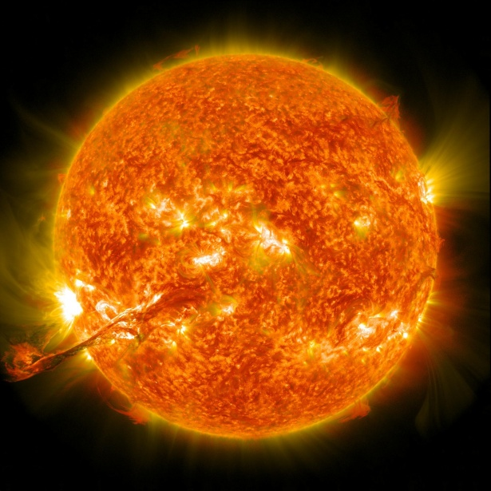

|  |
|
El Sol es una estrella enorme. Con un diámetro de 1,4 millones de kilómetros podría albergar a 109 planetas en su superficie. Si fuera hueco, más de un millón de Tierras podrían vivir en su interior, pero no lo es. Está relleno de gases calientes que representan más del 99,8 por ciento de la masa total del sistema solar. ¿A qué llamamos caliente? La temperatura alcanza los 5500 grados centígrados en la superficie y más de 15,5 millones de grados centígrados en el núcleo. En el núcleo del Sol, se producen reacciones de fusión en las que el hidrógeno se transforma en helio, que genera la energía. Unas pequeñas partículas de luz llamadas fotones transportan esta energía a través de la zona radiante hasta la capa superior del interior del Sol, la zona convectiva. Ahí, el movimiento de los gases hirviendo (como en una lámpara de lava) lleva la energía a la superficie. Este viaje dura más de un millón de años. La superficie del Sol, o atmósfera, está dividida en tres regiones: la fotosfera, la cromosfera y la corona solar. La fotosfera es la superficie visible del Sol y la capa más baja de la atmósfera. Por encima de la fotosfera se encuentran la cromosfera y la corona, que también emiten luz visible pero solamente se pueden ver durante eclipses solares, cuando la luna pasa entre la Tierra y el Sol. |